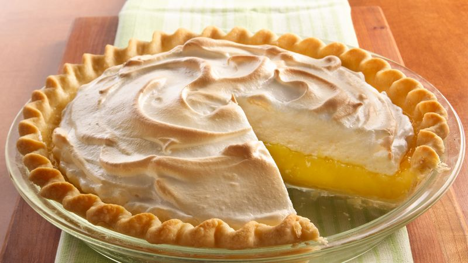

Mama's Homemade Lemon Meringue Pie

One 9-inch pie
30 Min Prep Time
10 Min - Cook Time
40 Min - Total
8 Servings
Ingredients
- 1 cup white sugar
- 2 tablespoons all-purpose flour
- 3 tablespoons cornstarch
- 1/4 teaspoon salt
- 1 1/2 cups water
- 2 lemons, juiced and zested
- 2 tablespoons butter
- 4 egg yolks, beaten
- 1 (9-inch) pie crust, baked
- 4 egg whites
- 6 tablespoons white sugar
Directions
- Preheat Oven: Preheat Oven to 350 degrees F (175 degrees C)
- Make Lemon Filling: In a medium saucepan...
- Whisk together 1 cup sugar, flour, cornstarch, and salt
- Stir in water, lemon juice, and lemon zest
- Cook over medium-high heat, stirring frequently, until mixture comes to a boil.
- Stir in butter.
- Place egg yolks in a small bowl and gradualy whisk 1/2 cup of hot sugar mixture
- Whisk egg yolk mixture back into remaining sugar mixture
- Bring to a boil and continue to cook while stirring constantly until thick.
- Remove from heat
- Pour filling into baked pastry shell.
- Make Meringue: In a large glass or metal bowl...
- Whip egg whites until foamy
- Add sugar gradually, and continue to whip until stiff peaks form
- Spread meringue over pie, sealing the edges at the crust
- Bake: Bake in preheated oven for 10 minutes, or until merngue is golden brown